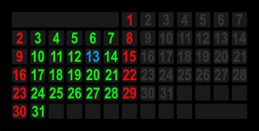
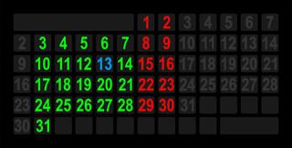
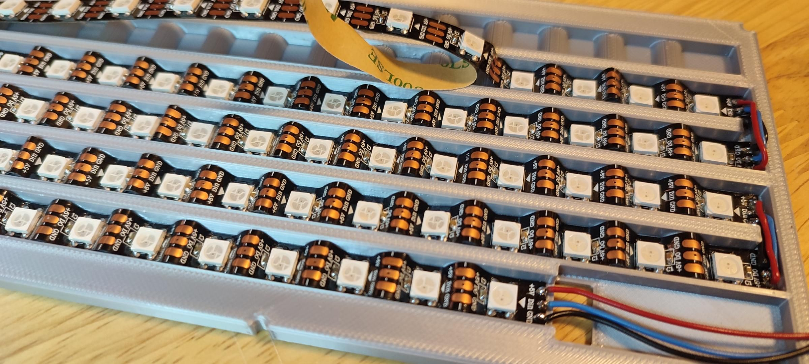
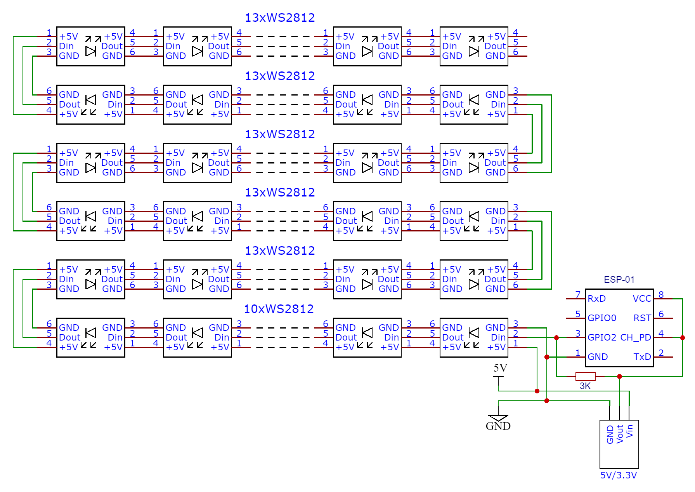
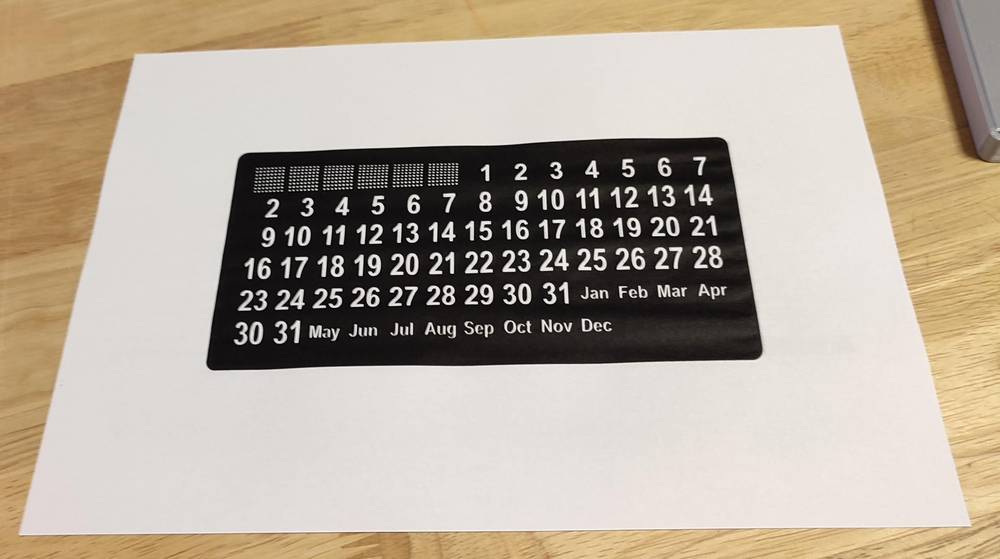

Este proyecto es un calendario perpetuo fisico que muestra todos los dias del mes actual usando LEDs de colores. Los digitos de los dias estan posicionados de tal manera que cualquier mes puede mostrarse simplemente encendiendo los LEDs en las posiciones correctas.

Enero 2022 - Domingo como primer dia

Enero 2022 - Lunes como primer dia
El calendario se sincroniza automaticamente con Google Calendar para mostrar:
Dias festivos - importados de calendarios publicos de tu pais
Aniversarios - cumpleanos, fechas importantes
Tareas - eventos y recordatorios
Cada tipo de evento se muestra en un color diferente, permitiendo ver de un vistazo que dias son especiales.
Principio de Funcionamiento
Los numeros permanecen fijos en su lugar. Solo los LEDs se encienden en diferentes posiciones y colores segun el mes:
Verde - Dias laborables (lunes a viernes)
Rojo - Fines de semana (sabado y domingo)
Azul - Dia actual
Magenta - Festivos
Cyan - Aniversarios
Naranja - Tareas
Prioridad de colores: Si un dia tiene multiples eventos, el color final sigue esta prioridad (el ultimo sobrescribe): Dia base → Dia actual → Festivos → Aniversarios → Tareas.
2 Caracteristicas
La Version 2 incluye mejoras significativas sobre el proyecto original:
Web Flasher
Instala el firmware directamente desde el navegador. No necesitas Arduino IDE ni conocimientos de programacion.
Interfaz Web Completa
Configura todo desde tu telefono o computadora: WiFi, colores, brillo, Google Calendar.
Actualizaciones OTA
Actualiza el firmware sin cables, directamente por WiFi.
mDNS
Accede facilmente via http://perpetualcalendar.local
Auto-Brillo
Ajusta automaticamente el brillo segun la hora. Modo nocturno para apagar LEDs de noche.
Colores Personalizables
Cambia los colores de cada tipo de dia desde la interfaz web.
WiFi Multi-Red
Configura red principal y de respaldo. Reconexion automatica.
Reloj con Colores
Opcion de mostrar HH:MM:SS usando 6 LEDs con colores codificados.
Importante: Presta atencion a la direccion de los datos (flechas en la tira). Las piezas se conectan en zigzag alternando direcciones.
Paso 4.2: Montar los LEDs en el Soporte
Posiciona las tiras de LEDs en el soporte, entre los relieves
Presiona firmemente con un palo de plastico para buena adherencia
Los relieves permiten acercar los LEDs a 12mm de distancia (como si fuera 83 LEDs/m)
Respeta las direcciones de las flechas (zigzag)

LEDs montados en el soporte mostrando el patron zigzag
Paso 4.3: Esquema de Conexiones

Diagrama completo de conexiones - nota el patron zigzag y la resistencia de 3K
Resistencia de 3K obligatoria: La resistencia entre GPIO2 y VCC es necesaria para que el ESP-01 arranque correctamente con la tira LED conectada. Sin ella, el modulo puede no iniciar.
Alimentacion: NO alimentes la tira de 75 LEDs desde el ESP8266. Usa una fuente externa de 5V/3A y conecta el GND comun entre la fuente, los LEDs y el ESP8266.
Paso 4.4: Preparar el Papel con Numeros

Plantilla impresa con los numeros y nombres de meses
PDF incluido: El archivo plantilla_numeros.pdf contiene la plantilla lista para imprimir en papel A4. Recorta siguiendo el contorno.
Paso 4.5: Ensamblaje Final
El ensamblaje se realiza en capas, de atras hacia adelante:
Soporte con LEDs - Base con las tiras LED montadas y soldadas
Modulo ESP y regulador - Fijados con pegamento caliente en la ranura
Rejilla 3D - Sobre el soporte, separa la luz de cada LED
Papel impreso - Con los numeros hacia arriba
Acrilico ahumado - Difunde la luz y protege
Marco frontal - Fija todo en su lugar
Pata trasera - Con cinta adhesiva de espuma
5 Instalacion del Firmware
Opcion A: Web Flasher (Recomendado)
La forma mas facil de instalar. No requiere ningun software.
Conecta el ESP8266 a tu computadora via USB
Abre Chrome, Edge u Opera (Firefox/Safari no soportados)
Reloj de Colores - Incluye reloj HH:MM:SS en LEDs 62-67
Haz clic en "Instalar"
Selecciona el puerto serial cuando aparezca
Espera ~30 segundos a que termine
Problemas comunes: Si no aparece el puerto, verifica que el cable USB soporte datos (no solo carga) y que ningun otro programa este usando el puerto (cierra Arduino IDE).
Opcion B: PlatformIO
# Clonar repositorio
git clone https://github.com/XE1E/Perpetual-Calendar-with-Google-Calendar-Connection-V2.git
# Version estandar
pio run -e standard -t upload
# Version con reloj de colores
pio run -e color_coded_clock -t upload
Instala la libreria FastLED desde el gestor de librerias
Selecciona placa: NodeMCU 1.0
Carga el sketch
6 Configuracion Inicial
Paso 6.1: Conectar al Punto de Acceso
Despues de flashear, el ESP8266 crea una red WiFi:
Parametro
Valor
Nombre de red (SSID)
Calendario
Contrasena
12345678
IP de configuracion
http://192.168.4.1
Paso 6.2: Configurar WiFi
Conecta tu telefono/PC a la red "Calendario"
Abre un navegador y ve a http://192.168.4.1
Haz clic en "Configuracion de Red"
Ingresa el SSID y contrasena de tu red WiFi
Opcionalmente, configura una red de respaldo
Guarda y reinicia
Paso 6.3: Configurar NTP
Ve a "Configuracion NTP"
Servidor NTP: pool.ntp.org (o uno local)
Zona horaria: Selecciona tu zona (ej: UTC-6 para Mexico Centro)
Horario de verano: Activa si aplica en tu region
Paso 6.4: Acceso Normal
Una vez configurado, accede al calendario mediante:
mDNS:http://perpetualcalendar.local
IP directa: La IP que le asigno tu router (visible en Serial Monitor)
7 Configuracion de Google Calendar
Paso 7.1: Crear Calendarios en Google
Necesitas tres calendarios separados:
Festivos - Importa el calendario de festivos de tu pais desde "Explorar calendarios de interes"
Aniversarios - Crea un nuevo calendario para cumpleanos y fechas importantes
Tareas - Crea un nuevo calendario para tareas y recordatorios
Importante: Los eventos deben ser de "todo el dia", no eventos con hora especifica. De lo contrario no apareceran en el calendario.
Paso 7.2: Obtener IDs de Calendarios
Ve a calendar.google.com
Haz clic en los tres puntos junto al calendario
Selecciona "Configuracion y uso compartido"
Busca "ID del calendario" (formato: xxx@group.calendar.google.com)
Copia el ID de cada calendario
Paso 7.3: Crear Google Apps Scripts
Para cada calendario, crea un script en script.google.com:
function doGet() {
var calId = 'TU_CALENDAR_ID_AQUI';
var calendar = CalendarApp.getCalendarById(calId);
if (!calendar) {
return ContentService.createTextOutput('Error: Calendario no encontrado');
}
var now = new Date();
var start = new Date(now.getFullYear(), now.getMonth(), 1);
var end = new Date(now.getFullYear(), now.getMonth() + 1, 0, 23, 59, 59);
var events = calendar.getEvents(start, end);
var days = "";
for (var i = 0; i < events.length; i++) {
if (events[i].isAllDayEvent()) {
var eventStart = events[i].getAllDayStartDate();
var eventEnd = events[i].getAllDayEndDate();
var current = new Date(eventStart);
while (current < eventEnd) {
if (current.getMonth() === now.getMonth()) {
days += current.getDate() + "-";
}
current.setDate(current.getDate() + 1);
}
}
}
return ContentService.createTextOutput(days);
}
Paso 7.4: Publicar los Scripts
En cada script, ve a "Implementar" → "Nueva implementacion"
Tipo: "Aplicacion web"
Ejecutar como: "Yo"
Quien tiene acceso: "Cualquier persona"
Haz clic en "Implementar"
Autoriza el acceso a tu cuenta de Google
Copia el ID de implementacion (no la URL completa)
Paso 7.5: Configurar en el Calendario
Accede a la interfaz web del calendario
Ve a "Apps Script Settings"
Pega los IDs de cada script en su campo correspondiente
Guarda la configuracion
Frecuencia de actualizacion: El calendario de tareas se actualiza cada minuto. Festivos y aniversarios se actualizan cada hora.
8 Reloj con Codigo de Colores
La version "Color Coded Clock" usa los LEDs 62-67 para mostrar la hora en formato HH:MM:SS, donde cada digito se representa con un color diferente.
Distribucion de LEDs
LED 62 LED 63 LED 64 LED 65 LED 66 LED 67
┌──┐ ┌──┐ ┌──┐ ┌──┐ ┌──┐ ┌──┐
│H1│ │H2│ │M1│ │M2│ │S1│ │S2│
└──┘ └──┘ └──┘ └──┘ └──┘ └──┘
↓ ↓ ↓ ↓ ↓ ↓
Decena Unidad Decena Unidad Decena Unidad
Hora Hora Minuto Minuto Segundo Segundo
Tabla de Colores por Digito
Digito
Color
Muestra
0
Negro/Apagado
1
Rojo
2
Naranja
3
Amarillo
4
Verde
5
Cyan
6
Azul
7
Purpura
8
Rosa
9
Blanco/Gris
Ejemplo: 14:35:27
LED 62 = 1 → Rojo (decena hora)
LED 63 = 4 → Verde (unidad hora)
LED 64 = 3 → Amarillo (decena minuto)
LED 65 = 5 → Cyan (unidad minuto)
LED 66 = 2 → Naranja (decena segundo)
LED 67 = 7 → Purpura (unidad segundo)
9 Interfaz Web
Paginas Disponibles
Pagina
URL
Descripcion
Principal
/
Menu de administracion
Red WiFi
/config.html
Configurar redes WiFi
NTP
/ntp.html
Servidor de tiempo
Apps Script
/appsscript.html
IDs de Google Scripts
Hora Manual
/time.html
Ajustar hora manualmente
Informacion
/info.html
Estado del sistema, reinicio
Brillo
/led.html
Control de brillo, test LEDs
Auto-Brillo
/autobrightness.html
Modo dia/noche
Colores
/colors.html
Personalizar colores
OTA
/ota.html
Actualizaciones por WiFi
Funciones de la Pagina de Informacion
Red: SSID conectado, IP, Mascara, Gateway, MAC
Recursos: RAM libre, Flash, CPU, Uptime
Reiniciar ESP: Reinicia el dispositivo
Borrar WiFi: Elimina credenciales y reinicia en modo AP
Configuracion de Auto-Brillo
Parametro
Descripcion
Rango
Brillo dia
Brillo durante horas diurnas
5-255
Brillo noche
Brillo durante horas nocturnas
0-255 (0=apagado)
Hora inicio dia
Cuando empieza modo dia
0-23
Hora inicio noche
Cuando empieza modo noche
0-23
10 Resolucion de Problemas
Animacion Arcoiris Continua
Causa: No se recibe respuesta del servidor NTP.
Solucion:
Verifica la conexion a Internet
Prueba otro servidor NTP (ej: time.google.com)
Verifica que el puerto UDP 123 no este bloqueado
No se Muestran Eventos de Google
Causa: Problema con los scripts de Google Apps.
Solucion:
Verifica que los IDs de scripts esten correctos
Asegurate de que los scripts esten publicados como "Cualquier persona"
Los eventos deben ser de "todo el dia"
Prueba el script en el navegador: https://script.google.com/macros/s/TU_ID/exec
Hora Incorrecta
Solucion:
Verifica la zona horaria en la configuracion NTP
Activa/desactiva horario de verano segun tu region
No Funciona mDNS
Solucion:
En Windows: Instala Bonjour (viene con iTunes)
En Android: Usa la IP directa
Espera 30 segundos despues del reinicio
LEDs No Encienden
Solucion:
Verifica la conexion del pin de datos (GPIO 2)
Verifica la alimentacion de 5V
Verifica la resistencia de 3K entre GPIO2 y VCC
Usa la funcion "Test LEDs" en la pagina de brillo
Verifica la direccion de las flechas en la tira LED
ESP No Inicia / Se Reinicia
Causa: Falta la resistencia de 3K o problema de alimentacion.
Solucion:
Asegurate de tener la resistencia de 3K entre GPIO2 y VCC
Verifica que la fuente de 5V tenga suficiente corriente (3A minimo)